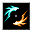

飛来物の阻止 Deflect Missiles
英語版 CrawlWiki の記事「Deflect Missiles」(0.34 向け、2026-05-25 版)の翻訳です。原文の著者は編集履歴をご覧ください。
|  飛来物の阻止 | |
|---|---|
| 詠唱の騒音 | 6 |
| 呪文の騒音 | 0 |
| フラグ | モンスター専用(Monster)、自己強化(Selfench) |

| 術者を反発の場で包み込み、あらゆる種類の飛び道具に対する回避を大きく高める。この効果は、他の理由で身動きが取れないときにも働く。 |
飛来物の阻止はモンスター専用の呪文であり、状態の名前でもある。飛び道具に対する回避が大きく上がる。
効果
飛来物を弾いている状態の生き物は、呪文も含めた遠隔攻撃に対して EV が +24 される。[1]この効果が役立つのは遠隔攻撃を回避するときだけで、遠隔攻撃を盾で防ぐ力は変わらない。
使い手
飛来物の阻止を唱える敵は次のとおり。
このほか、次の敵は飛来物の阻止のオーラをまとっている。
飛来物の阻止を持つモンスターは、はじめからこの状態がずっとかかっている。状態を解除されないかぎり、呪文を唱える必要はない。
戦略
飛来物の阻止を持つモンスターはめったにいない。予想どおり、遠隔攻撃を当てるのはかなり難しい。それでも呪術や呪術系のワンドは効く(いつものとおり、モンスターは意志力に応じた確率で抵抗するが)。それにボーグンジョルの忌まわしき掌握、ファイアボール、稲妻のロッドのように外れることのない攻撃は、もちろん影響を受けない。
ヤーラの強制魔法解除術や水銀のワンドを使えば、モンスターの飛来物の阻止を解除できる。
変更履歴

- 0.34 より前は、モンスター版の飛来物の阻止は飛び道具反発(Repel Missiles)という名前で、遠隔攻撃に対して EV が +15 されるだけだった(プレイヤーの RMsl と似たもの)。
- 廃止されたほうの「飛来物の阻止」という呪文についてはこの版を参照。
- 0.32 より前は、飛び道具反発は術者への遠隔攻撃の命中を、単体攻撃なら0〜100%、貫通する攻撃なら50〜100%下げていた。また、行動不能の相手には効かなかった。
- 0.25 より前は、飛び道具反発の上位版として飛来物の阻止という呪文があった。DMsl を持っていたモンスターは、かわりに飛び道具反発を持つようになった。
- 0.20 より前は、飛び道具反発はプレイヤーも使えるレベル2の風/加護の呪文で、飛び道具をかわすたびに効果が切れていった。ただし、ほかの入手元はいまもある。
- 0.14 より前は、飛び道具反発の状態は時間で切れていた。
出典
- ↑ attack.h:24 (0.34.0)